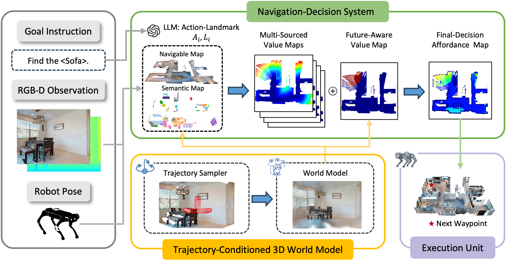
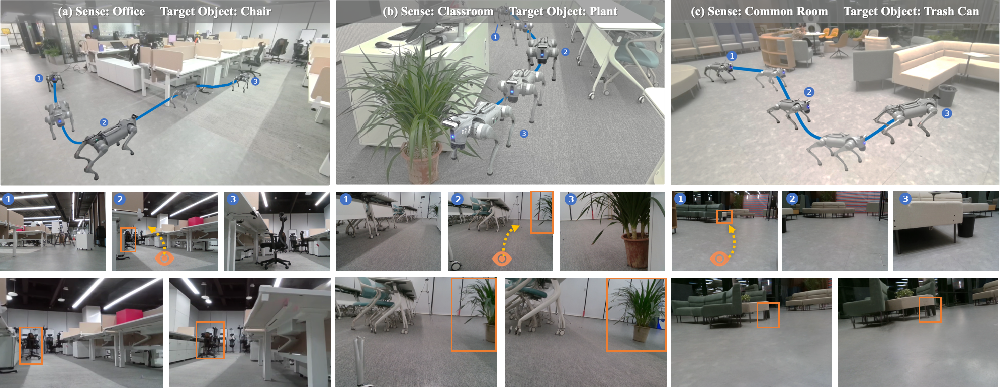

Schrödinger's Navigator equips a zero-shot object navigation agent with an ensemble of imagined futures. Instead of reacting only to the visible occluder, the robot samples several bypass trajectories, predicts what it is likely to observe along each route, and then selects waypoints using future-aware value maps that balance target likelihood, traversability, and uncertainty in hidden space.
Zero-shot object navigation asks a robot to find a target object in a previously unseen environment without scene-specific training or a pre-built map. In cluttered indoor spaces, occlusions make this especially difficult: the robot can perceive the blocking structure, but it cannot directly reason about hidden targets, hazards, or moving objects behind it. Schrödinger's Navigator addresses this by treating unobserved space as a small set of plausible futures.
Given the current RGB-D observation and robot pose, the system generates three occluder-aware candidate trajectories and uses a trajectory-conditioned 3D world model to imagine future observations along each route. These imagined views update both a Global Target Value Map and a Future-Aware Value Map, allowing the planner to prefer paths that are safer, less occluded, and more likely to reveal the target.
The paper reports consistent gains on a Unitree Go2 robot in challenging occlusion-heavy settings, including static object search and scenarios with unknown risks. HM3D experiments further show that the same future-imagination strategy transfers well to simulation.
The planner does not rely on a single greedy path. It deterministically samples three candidate bypass strategies around the dominant occluder, including left, right, and over-the-top alternatives, so the robot can explicitly compare distinct futures before moving.
For each candidate route, the world model predicts future 3D Gaussian Splatting observations conditioned on that trajectory. This lets the agent anticipate post-occlusion views, hidden target cues, and risky space that is currently outside the field of view.
Imagined observations are fused back into navigation maps, producing waypoint scores that jointly reflect semantics, visibility, free space, and uncertainty. The resulting policy is better aligned with real-world search under clutter, motion, and partial observability.
The supplementary video shows representative rollouts from both real-world and simulated environments. The real-robot sequences include the office, classroom, and common room scenes used in the paper, as well as dynamic cases such as moving chairs and sudden occlusions entering the robot's view.

The full pipeline starts from a language goal, egocentric RGB-D observations, and robot pose. A trajectory sampler first proposes three candidate trajectories that explicitly reason around the visible occluder. Each trajectory conditions a 3D world model, which predicts future observations and feeds those predictions into the navigation stack.
The predicted cues update the Global Target Value Map and the Future-Aware Value Map, yielding an affordance map that ranks intermediate waypoints. The execution module then follows the selected waypoint and continuously replans as new observations arrive. This design keeps the system training-free at deployment time while still giving it a concrete mechanism for anticipating hidden space.
The latest paper reports two experiment tracks: HM3D/Habitat simulation and real-world deployment on a Unitree Go2. Below we mirror the current PDF: the real-robot benchmark covers static object search and scenarios with unknown risks across three indoor environments, while the simulation benchmark reports SR, SPL, and DTG on 1,000 HM3D episodes.
Static targets
vs. 22/30 for InstructNav*
Unknown risks
vs. 11/30 for InstructNav*
HM3D DTG
best DTG, with second-best SR/SPL

Figure 5 in the paper visualizes three real-world scenarios: Office "Chair", Classroom "Plant", and Common Room "Trash Can".
The real-robot system is built on a Unitree Go2 with a RealSense D435i RGB-D camera. The benchmark spans Office, Classroom, and Common Room, and evaluates two conditions: standard static object search and scenarios with unknown risks, where severe static occlusions are not visible from a distance.
| Scene | Office | Classroom | Common Room | All |
|---|---|---|---|---|
| Search for static objects | ||||
| InstructNav* | 7/10 | 7/10 | 8/10 | 22/30 |
| Ours | 8/10 | 8/10 | 7/10 | 23/30 |
| Scenarios with unknown risks | ||||
| InstructNav* | 4/10 | 3/10 | 4/10 | 11/30 |
| Ours | 5/10 | 6/10 | 6/10 | 17/30 |
The paper evaluates 1,000 episodes across six target categories on HM3D. Our method achieves the best DTG and the second-best SR and SPL in Table I.
| Method | Training Free | HM3D | ||
|---|---|---|---|---|
| SR↑ | SPL↑ | DTG↓ | ||
| ZSON | ✗ | 0.255 | 0.126 | -- |
| PixNav | ✗ | 0.379 | 0.205 | -- |
| SPNet | ✗ | 0.312 | 0.101 | -- |
| SGM | ✗ | 0.602 | 0.308 | -- |
| ESC | ✓ | 0.392 | 0.223 | -- |
| VLFM | ✓ | 0.525 | 0.304 | -- |
| VoroNav | ✓ | 0.420 | 0.260 | -- |
| L3MVN | ✓ | 0.504 | 0.231 | 4.43 |
| TriHelper | ✓ | 0.565 | 0.253 | 3.87 |
| GAMap | ✓ | 0.531 | 0.260 | -- |
| InstructNav | ✓ | 0.510 | 0.187 | 2.89 |
| InstructNav* | ✓ | 0.453 | 0.186 | 3.38 |
| CogNav | ✓ | 0.725 | 0.262 | -- |
| ApexNav | ✓ | 0.762 | 0.380 | -- |
| Ours | ✓ | 0.739 | 0.317 | 2.23 |
@misc{he2026schrodingersnavigatorimaginingensemble,
title = {Schr\"odinger's Navigator: Imagining an Ensemble of Futures for Zero-Shot Object Navigation},
author = {Yu He and Da Huang and Zhenyang Liu and Zixiao Gu and Qiang Sun and Guangnan Ye and Yanwei Fu and Yu-Gang Jiang},
year = {2026},
eprint = {2512.21201},
archivePrefix= {arXiv},
primaryClass = {cs.RO},
url = {https://arxiv.org/abs/2512.21201}
}